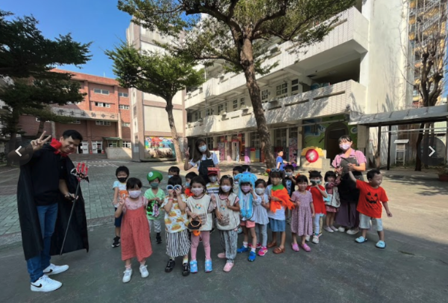

Story 01 · Western Festival
Halloween
萬聖節
Halloween is a major global holiday. These young pupils enjoyed the Halloween theme by listening to scary stories about famous monsters. They also had lots of fun dressing up in costumes and participating in classroom activities.
萬聖節是一個全球性的重大節日。這些年輕的學生透過聆聽關於著名怪物的恐怖故事，享受了萬聖節的主題。他們還穿上了各種服裝，參加了教室裡的活動，玩得非常開心。
Listen · 聆聽範讀